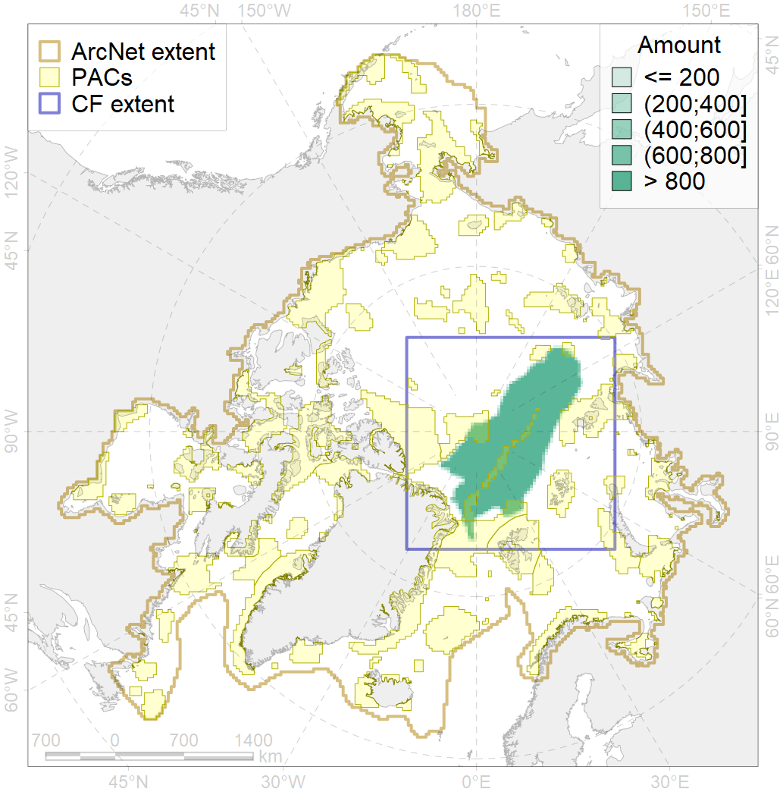
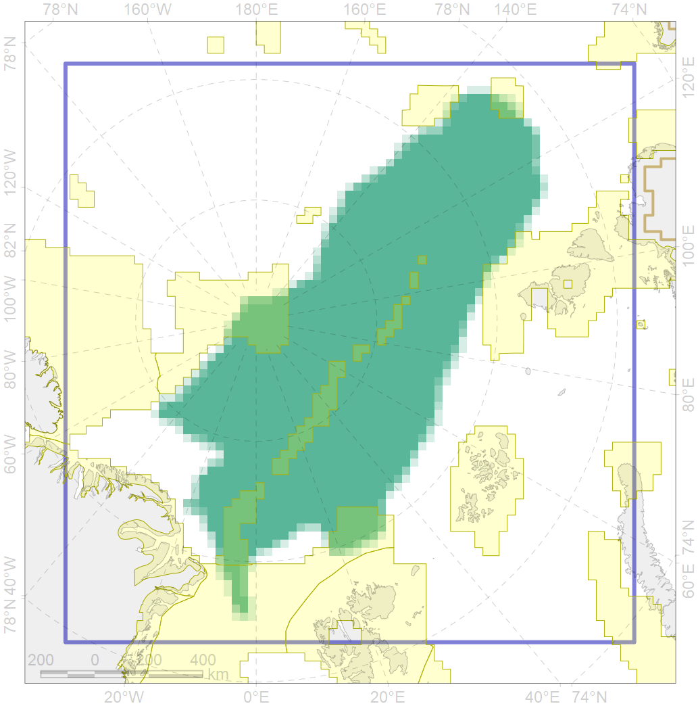

7017

| CF code | 7017 |
| CF name | Amundsen and Nansen Basins abyssal region |
| Time Period | 1900-2010 |
| Source(s) | Spiridonov et al., in prep. |
| Seasonality | 1-12 |
| Depth Horizon | Sea floor |
| Methodology | Boundaries derived from biogeographic regionalization scheme, which is in preparation for publication |
| Use Restrictions | Not for public use prior to publication (expected in early 2020) |
| Author Name | V. Spiridonov |
| Notes | |
| Scenario’s Target | 0.07 |
| Target Achievement | 0.128 (Scenario: 182.6%) |
| PAC | Share of the Total Amount within the PAC | Share of the Target Achievement for the ArcNet | PAC’s Contribution to the Target Achievement |
|---|---|---|---|
| 14 | 0.2%0.3% | 0.3%0.6% | 0.2%0.3% |
| 28 | 5.6%5.8% | 67.4%70.2% | 36.9%38.5% |
| 29 | 3.0%3.1% | 37.3%38.2% | 20.4%20.9% |
| 30 | 0.0%0.0% | 0.0%0.0% | 0.0%0.0% |
| 55 | 3.0% | 14.4% | 7.9% |
| 82 | 0.0%0.3% | 0.3%1.5% | 0.2%0.8% |
| 83 | 0.5%0.9% | 1.4%1.5% | 0.7%0.8% |
| inner | 12.2%13.3% | 121.1%126.4% | 66.3%69.3% |
| outer | 87.8%88.1% | 61.5%62.4% | 33.7%34.2% |
| † supplement values are for area consistence whereas principal values are for Accenter compatible gridded stats |